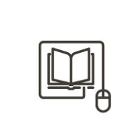
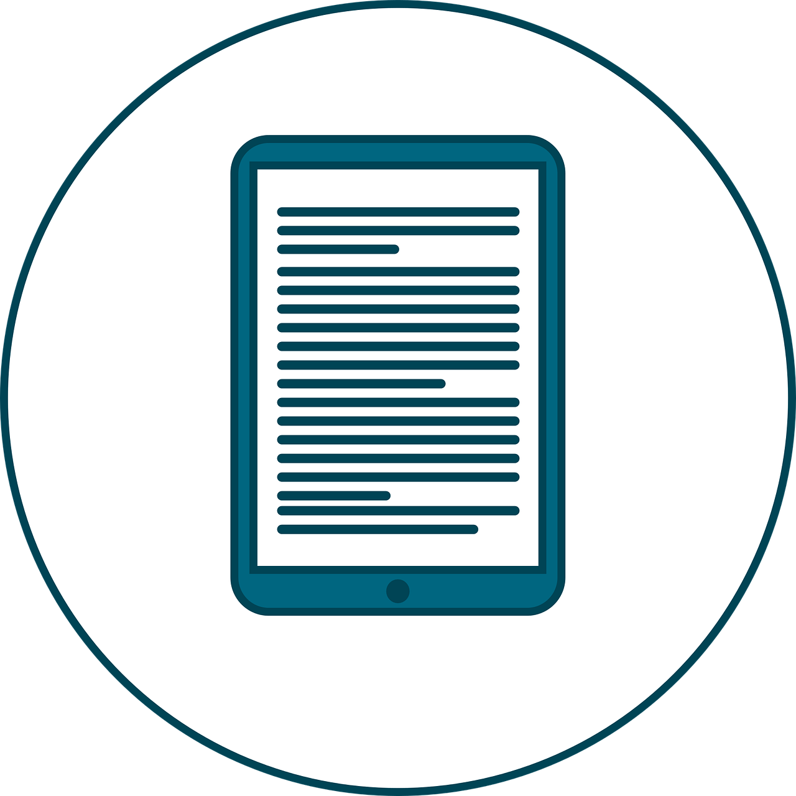

Com o passar dos tempos, as formas de ensinar foram ganhando novos meios. Se olharmos para o passado, o ambiente escolar é completamente diferente do atual. Os quadros negros foram substituídos por quadros brancos magnéticos e o giz por canetas de tinta, mas isso é apenas um pedaço da grande mudança que vem ocorrendo, pois quanto mais o tempo passa, mas o cenário de ensino vem se aprimorando e se tornando mais flexível.
Novas formas de aprender foram ganhando espaço, como é o caso do ensino a distância, o chamado EAD, que ganhou muita visibilidade nesse período de pandemia durante o ano de 2020, aonde as aulas que antes eram ministradas presencialmente, passaram a ocorrerem de maneira virtual, algo que antes da pandemia era visto como um absurdo por muitos.
Vale ressaltar também que o material escolar mudou bastante com o passar dos tempos, na verdade, ele foi reduzido a um único aparelho, o computador.É capaz de nas décadas seguintes, os jovens nem saberem mais o que é usar um lápis e um papel, pois pelos computadores e possível realizar tudo, com muito menos esforços.
Podemos citar ainda os livros, que antigamente precisava-se comprar o próprio livro físico em uma livraria, e caso não encontrasse, deveria se dirigir a uma biblioteca e ter a sorte de existir uma cópia do mesmo lá. Já hoje em dia, com os chamados e-books, isso tudo mudou drasticamente, é possível ter acesso a qualquer livro instantaneamente por meio de um celular, tablet ou leitor de livros, o que deixou muito mais prático, além de muito mais barato, já que todas as cópias são virtuais.
A maneira de ensino e aprendizagem, tente a evoluir cada vez mais como qualquer outra área veio evoluindo nos últimos anos, mas por mais maravilhoso e prático que tudo isso possa parecer, é importante estar atento aos malefícios que advém dessa nova forma de aprendizado, pode-se dizer que se afastou muito das interações sociais que antes existiam, sem contar o fato de hoje, a sensação de conquista é muito mais rasa do antes.
Percebe-se que o ensino se mais introspectivo e pessoal, aonde as pessoas basicamente aprendem dentro de suas próprias residências, anulando quase qualquer interação social, sem contar a praticidade que todo esse contexto causou, o que gerou um prazer imediato nas pessoas, afastando-se daquela sensação de conquista, pois tudo se tornou muito mais fácil de ser adquirido, pois com poucos cliques, é possível ter tudo aquilo que antes precisava de muito esforço.
Mas de maneira geral, a tecnologia evolui para ajudar as pessoas nas suas tarefas do dia a dia, e sendo usada com moderação e com responsabilidade, sem dúvidas alguma é de extrema importância para todos, pois ela reflete justamente até que ponto a evolução humana chegou.